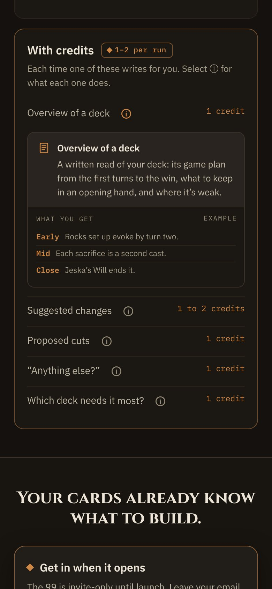
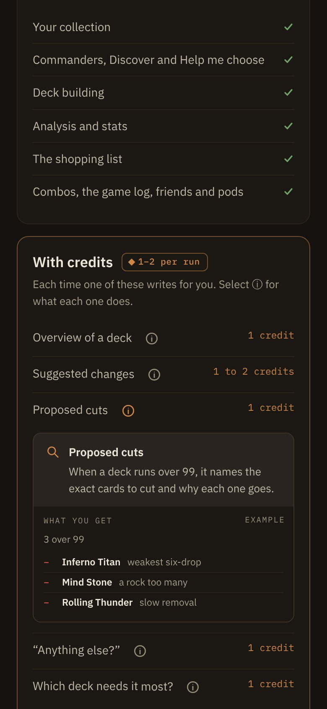
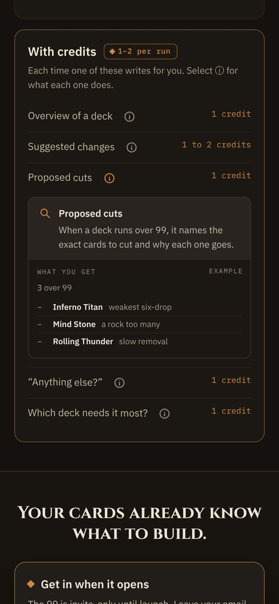
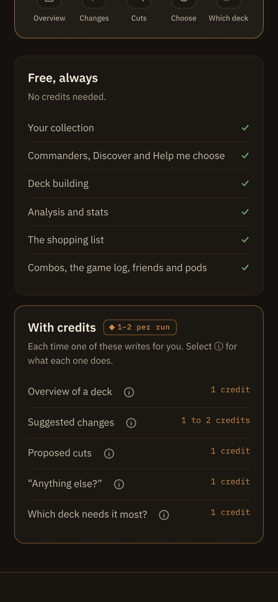
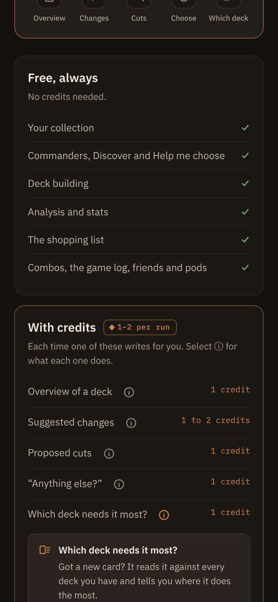
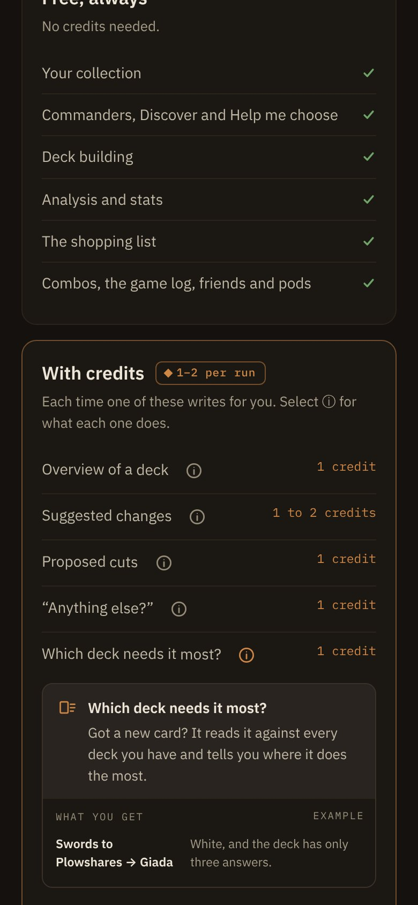

A4Phone · opening, switching, the last row
The pressed row stays put, and an open tip is always in view
Phone viewport frames, 390 × 844. Moving rows under a finger is the one risk of an in-flow tip, so two rules come with it.
Switching tips · the row you pressed stays where it was
1 · Overview of a deck open

The reader presses the ⓘ on Proposed cuts, 467px down the screen.
2 · Recommended: anchored

The Overview tip closes and the Proposed cuts tip opens. The page scrolls by the height that closed above, so Proposed cuts stays at 467px and its tip opens under the reader’s finger.
Without the anchor

Closing the tip above lifts every row by its 223px: Proposed cuts jumps to 227px and the reader loses their place. Not this.
The last row · the tip scrolls into view
1 · Near the bottom

Which deck needs it most? sits 700px down, close to the screen’s edge.
Without the scroll

Its tip opens below the fold: only its first lines show. Not this.
2 · Recommended: in view

When the open tip runs past the bottom, the page scrolls just enough to show all of it with 16px to spare. A tip already in view never moves the page.
Opening and closing
- Open: press the ⓘ. The card arrives with the shipped
.anim-menu-in (no beat, eased, as popovers do); the rows below move at once, with no height animation sliding text under the reader. - Close: press the same ⓘ again, open another one, or Escape.
- A press elsewhere no longer closes a phone tip: it covers nothing, and a scroll that starts outside the list would otherwise collapse it mid-swipe and jump the page.
Scrolling
- Switching: when a tip above the pressed row closes, keep the pressed ⓘ’s screen position (read it before, scroll by the difference after).
- Into view: after opening, if the tip’s bottom is past the screen, scroll so it ends 16px above the bottom; if the tip is taller than the screen, put its top 16px under the top instead. Smooth, or instant under reduced motion.
Reduced motion
The card simply appears (.anim-menu-in sits in the shipped reduced-motion block) and the into-view scroll jumps. Nothing else moves.